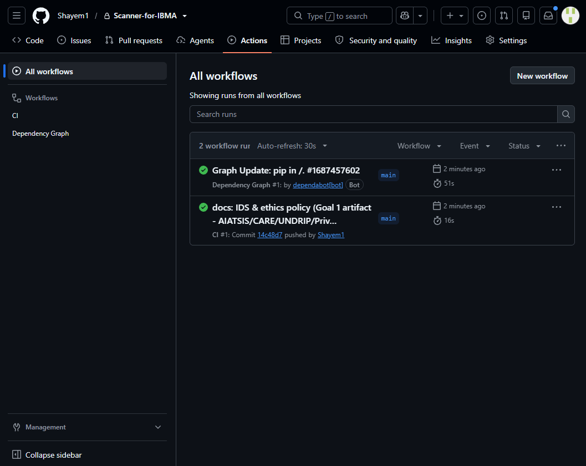

live Python · Selenium · Excel pipeline · GitHub Actions
Scanner-for-IBMA
The autonomous workflow my learning plan asked for — built, then given a CI pipeline it now runs itself.
What it does
- Scans contact and attendance data from spreadsheets and authenticated web systems into day-keyed, ID-indexed workbooks (e.g. Friday 14-08-2026.xlsx).
- Re-saves on a fixed 5-minute cycle, so the workbook is a live register, not a snapshot.
- Crash-safe by design: on restart it merges into the existing workbook instead of overwriting — no data lost when the machine or session dies mid-run.
recover.pyrebuilds any workbook from its weekday text exports — verified end-to-end by the CI smoke test.- Runs fullscreen as an operator dashboard with live ID entry.
How it is built
Browser session (IBMA SharePoint, authenticated)
| Selenium reads objects
v
main.py (customtkinter GUI) --5-min cycle--> day workbook .xlsx
| ^
+-- crash recovery: merge() ---------------+
+-- recover.py: weekday .txt -> rebuilt .xlsx
|
GitHub Actions CI: compileall -> import check -> smoke test -> lint
Data hygiene is structural, not promised: .gitignore blocks *.txt, *.xlsx and /memory/, so student and contact records can never reach the repository. Individuals travel as ContactID-* pseudonyms (APP 2 / APP 11).
Governance
First project governed under a published IDS & ethics policy — docs/ids-ethics-policy.md (Indigenous Data Sovereignty, CARE principles, Privacy Act 1988 controls mapped one-to-one against implemented features). Full text is in the private repo and mirrored in the assessment portfolio export.
Learning-plan alignment
Goal 4 (autonomous scan→database workflow — the plan's own capstone, verbatim) · Goal 3 (Git, CI, tooling) · Goal 1 (governance artifact). Full mapping →
Evidence
Repository access: private — grant/view access provided to the marker on request (Canvas message). The load-bearing proof is embedded on this page instead of behind a login.

14c48d7, main). Checks: syntax compile, dependency imports, pipeline smoke test, lint report.- Commits
2484726(CI pipeline) and14c48d7(IDS policy) — hashes verifiable in the private repo on request ci/smoke_test.pydrives the real txt→xlsx pipeline and asserts header + codesA101/A202/A303— demo fixture data only, no real records- Policy text quoted on this page below and mirrored in the assessment portfolio export
“Individuals are handled as ContactID-* codes; the code→person mapping stays inside IBMA's own systems and is never duplicated by this tool.” — docs/ids-ethics-policy.md, §4